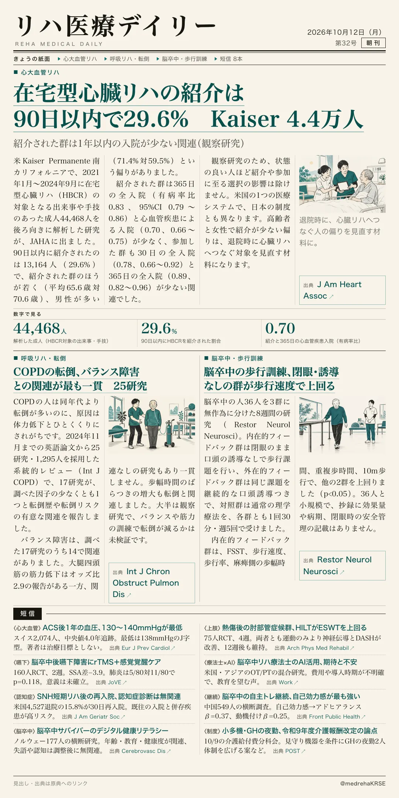
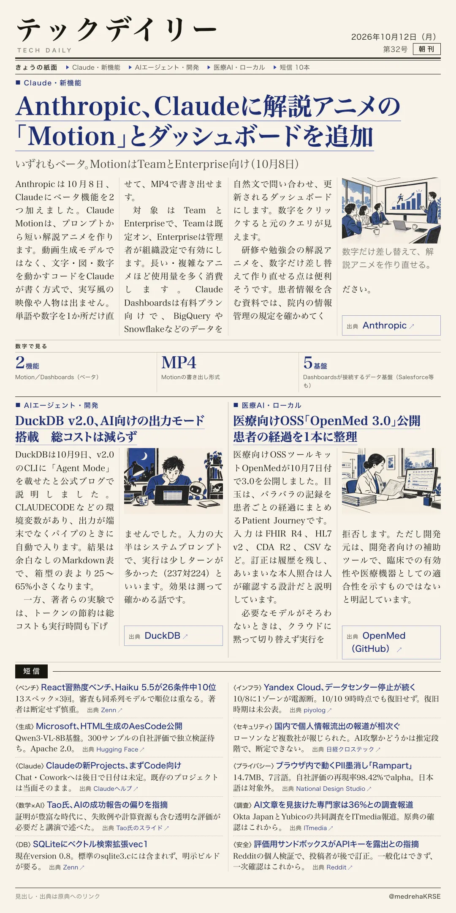

リハ医療デイリー
在宅型心臓リハの紹介は90日以内で29.6% Kaiser 4.4万人
紹介された群は1年以内の入院が少ない関連（観察研究）
心臓リハの紹介と参加の実態を、米国の大規模な医療システムで調べた研究です。

テックデイリー
Anthropic、Claudeに解説アニメの「Motion」とダッシュボードを追加
いずれもベータ。MotionはTeamとEnterprise向け（10月8日）
プロンプトから短い解説アニメを作るMotionと、データ連携のDashboardsが加わりました。
